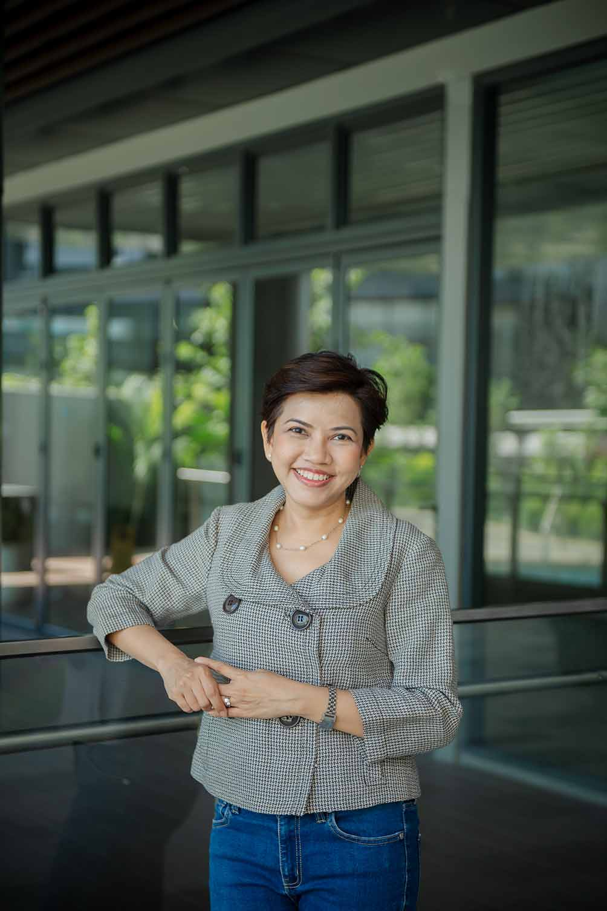
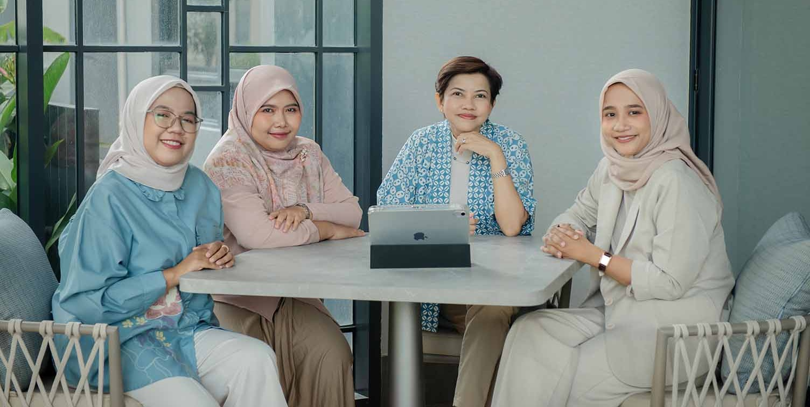

Integrity
We are deeply committed to data quality. From recruitment and research design through to quality control and reporting, we ensure that the insights we deliver are grounded in real-world contexts and honest methodology.
Satu Insights was founded on the belief that good research is both disciplined and human.
"Satu" means one in Malay and Indonesian. One team, one focus, one shared commitment to quality.
Satu Insights brings together experienced researchers who value clarity, integrity, and thoughtful collaboration. We work closely with clients across industries and geographies, supporting decisions that matter through research that is careful, credible, and context-aware.
We do not believe in rushing insight or overcomplicating findings. Our role is to listen carefully, ask the right questions, and translate complexity into understanding.
Satu Insights grew out of a simple observation: that the best research comes from people who are genuinely invested in the question being asked.
Our founder, Jennifer, spent 15 years leading research projects across Southeast Asia, working with global agencies, regional corporates, and local brands. Over time, a small group of like-minded researchers, peers with shared values and shared standards, began working together on projects that called for that kind of care.
Satu Insights is the home that grew from those collaborations. A collective, not a corporation. A practice built on relationships, not transactions.
We are based in Jakarta, Indonesia, and work with clients across Southeast Asia and globally.
We are deeply committed to data quality. From recruitment and research design through to quality control and reporting, we ensure that the insights we deliver are grounded in real-world contexts and honest methodology.
Trust is earned through consistency and transparency. We share findings honestly, communicate openly, and build relationships based on mutual respect. Many of our client partnerships span multiple years. That continuity is something we value and work to deserve.
Our work is shaped by care: for the research, for the people behind the data, and for the decisions our clients need to make.

Jennifer is a Malaysian-born market research consultant who has been based in Jakarta, Indonesia since 2014. With 30 years of professional experience and 15 years dedicated specifically to market research, she has led hundreds of studies across banking, FMCG, technology, healthcare, automotive, and more.
She has worked on both sides of the research table: as client commissioning research, and as the consultant delivering it. That dual perspective shapes how she frames questions, challenges briefs, and translates findings into direction that clients can actually use.
Jen founded Satu Insights to build something with staying power: a small, trusted practice where senior expertise is the standard, not the exception.
She is trilingual in English, Malay, and Indonesian, and brings genuine regional fluency to every project she leads.

Satu Insights is powered by a close-knit group of experienced researchers who share a commitment to careful, quality-focused work.
Each member of the team comes with formal research training and years of hands-on experience across research execution and client management. We work collaboratively, support one another, and hold shared standards for every project we take on.
For our clients, this means consistent quality, thoughtful collaboration, and a team that is genuinely engaged from start to finish.